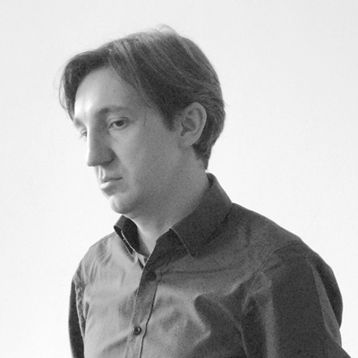

V průběhu PR Akademie budete mít možnost konzultovat komunikaci své neziskovky či příspěvkové organizace se všemi členy přípravného týmu, ale i s externími lektory a hosty.
Na PR Akademii pro neziskovky také lektorovali nebo lektorují:
-
 Jenda Žáček. Lektor a konzultant v oblasti strategické komunikace a strategie organizací na volné noze.
Jenda Žáček. Lektor a konzultant v oblasti strategické komunikace a strategie organizací na volné noze. -
 Petra Melingerová. Organizuje tiskové konference, akce pro veřejnost a spravuje sociální sítě pro Latu – programy pro mládež a rodinu, Auto*mat a SCIO.
Petra Melingerová. Organizuje tiskové konference, akce pro veřejnost a spravuje sociální sítě pro Latu – programy pro mládež a rodinu, Auto*mat a SCIO. -
 Lukáš Novák, Litigo Communications. Specialista na oblast krizové komunikace a spolumajitel komunikační agentury.
Lukáš Novák, Litigo Communications. Specialista na oblast krizové komunikace a spolumajitel komunikační agentury. -

Zdeněk Mihalco. Dlouholetý novinář (Forbes, Hospodářky, Aktuálně.cz) dnes vede programové oddělení Nadace Via.
-
 David Ondřich. Pomáhá s řízením a přípravou projektů a zajišťuje technický dozor investora. Vydává časopis pro příznivce astronomie.
David Ondřich. Pomáhá s řízením a přípravou projektů a zajišťuje technický dozor investora. Vydává časopis pro příznivce astronomie.